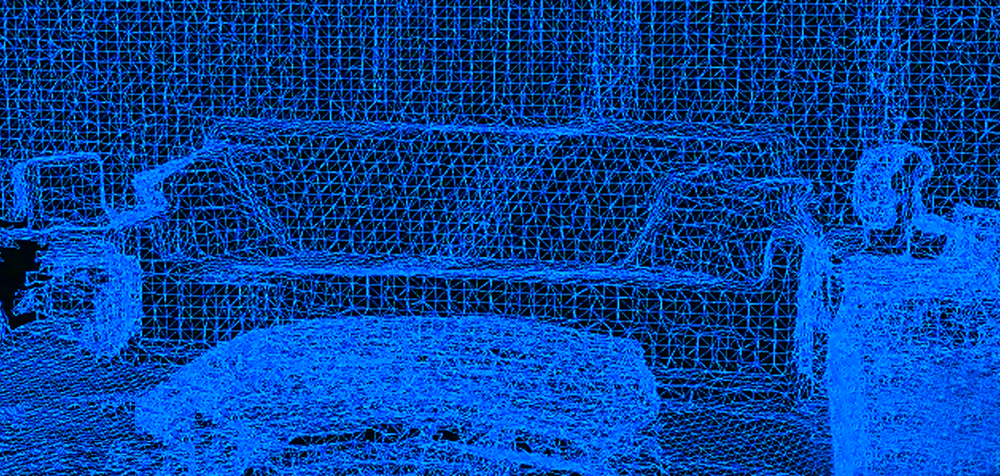
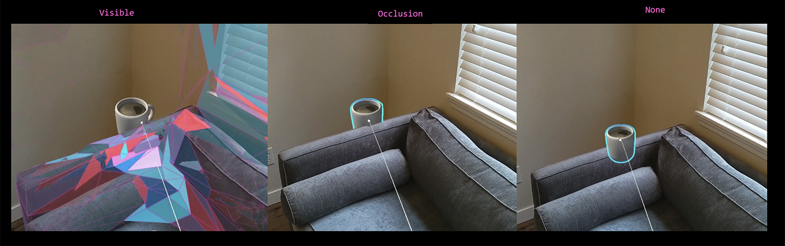

空间感知
MR应用的特点是融合虚实，需要准确对齐虚拟世界与真实世界，虚实之间也要能相互作用，如反射、遮挡、物理模拟等，空间感知基于空间网格，它是头戴示显示器的视觉传感器捕捉到的空间表间网格信息，如下图

-
开启空间感知：
可以通过 EMR.Space.spatialAwarenessEnable 属性控制空间感知的开启与否
// 打开空间感知
EMR.Space.spatialAwarenessEnable = true;
- 空间感知事件
以下事件都属性EMR.Space类的静态事件
| 名称 | 事件委托 | 说明 |
| onAddSpatialMesh | UnityEngine.Events.UnityAction<AddSpatialMeshEventData> | 空间网格添加事件 |
| onUpdatedSpatialMesh | UnityEngine.Events.UnityAction<UpdatedSpatialMeshEventData> | 空间网格更新事件 |
| onRemovedSpatialMesh | UnityEngine.Events.UnityAction<RemovedSpatialMeshEventData> | 空间网格移除事件 |

以上事件均属于EMR.Space类的静态事件
- 常用属性
| 属性名称 | 类型 | 说明 |
| spatialMeshVisibleMode | SpatialMeshVisibleMode 枚举，none（不显示） | visible（显示） | occlusion（遮挡） | 网格显示模式 |
